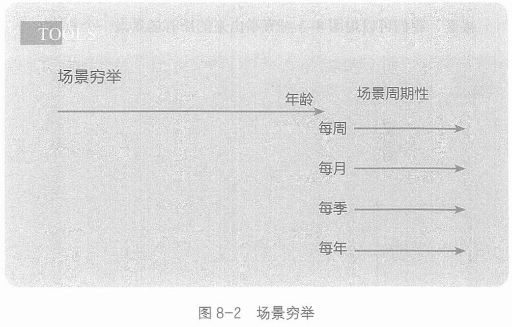

第八章 场景的分歧：产品场景匹配
的事情，是先进行“场景穷举”，再进行“场景识别”。
场景穷举，就是先把所有可能的场景打开看一看。可以通过团队头脑风暴，或者工作坊，把用户可能会用到这个产品的生活/工作的具体场景穷举出来，直到再也想不出还有什么场景为止。(见图8-2。我在图上打了一个“年龄”的提示，因为在不同年龄阶段，产品肯定会出现在不同场景里。)

接着，找一找有没有周期性出现的场景，看一看最高频的是哪个，想一想如何让自己的产品进入这个场景。
比如，我们做过一个面对大学生的产品机会洞察，首先做场景穷举，把一个大学生从收到录取通知书到毕业离校这个时间段内，遇到的所有学习、生活、社交等场景都列出来，然后看所有场景中有哪些机会。
因为很多场景的出现都有周期性——新生入学一年一次，考试两个月一次， 自习一天一次，而看课程表一天好几次，那么选择场景，
239